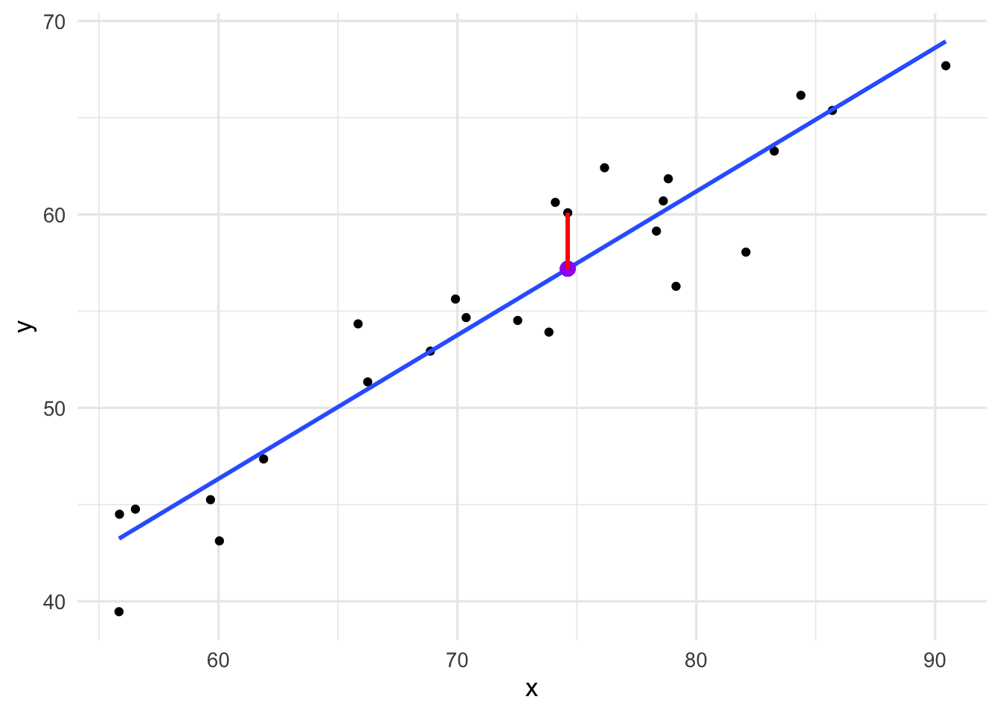

Lesson
Introduction to Linear Regression
Learning Objectives
After this lesson, students will be able to:
Define linear regression and appreciate it from the perspective of machine learning.
Use R to fit linear regression modes.
Readings, etc.
For this lesson:
- Read Chapter 8 from from Data Science: A First Introduction (Timbers, Campbell, and Lee 2022). View book online.
You may also be interested in:
Read chapter 3 from of An Introduction to Statistical Learning (Tibshirani, James, and Trevor 2017). You may also want to read chapter 2 of Statistical Learning with Math and R (Suzuki 2020).
Watch the corresponding video lecture on regression. View on YouTube.
Motivation for Linear Regression
Recall that in a supervised learning problem, we assume that there is a relationship between the predictor and response variables of the form:
\[ y = f({\bf x}) + \epsilon \] and then we seek to find a function \(\hat{f}\) from a predetermined class of functions that does a good job in approximating \(f\). Let’s study this problem in more detail but in a very simplest setting. Specifically, we will assume that \({\bf x}\) and \(y\) are both single numerical variables and that \(f\) is linear. Then writing everything out in detail, we assume that there are (true but unknown) numbers \(\beta_{0}\) and \(\beta_{1}\) such that
\[ y = \beta_{0} + \beta_{1} x + \epsilon \] for all values of \(x\) and \(y\). Recall that we are assuming that \(\text{E}[\epsilon] = 0\) so \(\epsilon\) is a random variable with expected value (or mean) equal to zero.
If we restrict ourselves to the class of single-variable linear functions, then finding an approximation to \(f(x) = \beta_{0} + \beta_{1} x\) is equivalent to finding values \(\hat{\beta}_0\) and \(\hat{\beta}_{1}\) so that
\[ \hat{f}(x) = \hat{\beta}_{0} + \hat{\beta}_{1} x \approx f(x) = \beta_{0} + \beta_{1} x \] Thus, this would be a parametric model since any candidate approximating function is uniquely specified by specifying the values for the parameters \(\hat{\beta}_0\) and \(\hat{\beta}_{1}\).
Figure 1 shows the plot of data that has been generated by a relationship of the form \(y = \beta_{0} + \beta_{1} x + \epsilon\). You should examine the code used to create or simulate the data in this example and see how it relates to the expression \(y = \beta_{0} + \beta_{1} x + \epsilon\).
Code
set.seed(1287)
N <- 25
x <- rnorm(N,mean=72,sd=12)
y <- 1.2 + 0.75 * x + rnorm(N,sd=2)
xy_data <- tibble(x=x,y=y)
xy_data %>%
ggplot(aes(x=x,y=y)) +
geom_point()From a (supervised) machine learning perspective, fitting a line to such data means “learning” the values of \(\hat{\beta}_0\) and \(\hat{\beta}_{1}\) from the data. How do we learn \(\hat{\beta}_0\) and \(\hat{\beta}_{1}\)? Figure 2 shows the same data as in Figure 1 but where we have added a best fit line as well as a single residual value.
Code
fitted_linear_model <- lm(y ~ x, data=xy_data) %>%
augment()
a_point <- fitted_linear_model[1,1:3] %>% as.numeric()
xy_data %>%
ggplot(aes(x=x,y=y)) +
geom_point() +
geom_smooth(method="lm",se = FALSE) +
geom_point(data=NULL,aes(x=a_point[2],y=a_point[3]),color="purple",size=3) +
geom_segment(aes(x = a_point[2], y = a_point[1], xend = a_point[2], yend = a_point[3]),
data = NULL,
color="red",lwd=1)
Figure 3 shows the same data as in Figure 1 but where we have added a best fit line as well as all the residual values. One way to learn the values for \(\hat{\beta}_0\) and \(\hat{\beta}_{1}\) is to minimize the squared error for the residuals.
Code
fitted_linear_model %>%
ggplot(aes(x=x,y=y)) +
geom_point() +
geom_smooth(method="lm",se = FALSE) +
geom_segment(aes(x = x, y = y, xend = x, yend = .fitted),
color="red",lwd=1)Notice that we can write the squared error for the residuals as a function of two variables \(L(\beta_{0},\beta_{1})\) defined by
\[ L(\beta_{0},\beta_{1}) = \sum_{i=1}^{n}(y_{i} - \beta_{0} - \beta_{1}x_{i})^2 \]
Then, in order to minimize this function we need to find the critical values for the function \(L\) by computing partial derivatives and solving
\[ \begin{align*} \frac{\partial L}{\partial \beta_{0}} &= 0 \\ \frac{\partial L}{\partial \beta_{1}} &= 0 \end{align*} \]
However, there is an alternative approach that uses tools from linear algebra such as matrices and we will examine this approach for a few reasons:
It motivates the use of linear algebra and matrices in machine learning.
It helps provide a geometric perspective to machine learning.
It generalizes well to the situation when we have more than one predictor variable.
The next section treats the linear algebra tools we will use for linear regression and the section after that applies linear algebra to do linear regression.
Note: Linear regression can and often is used even in situations where we do not know a priori that \(f\) in the relation \(y = f(x) + \epsilon\) is linear.
Question: What do you think some of the pros and cons of using linear regression for supervised learning even if the function \(f\) in the relationship \(y = f(x) + \epsilon\) might not be linear?
Simple Linear Regression
Return to the data shown in Figure 1 and Figure 2. Fitting a line to this data means finding values for the intercept \(\hat{\beta}_{0}\) and slope \(\hat{\beta}_{1}\) so that for each data point \((x_{i},y_{i})\) we have that
\[ \hat{\beta}_{0} + \hat{\beta}_{1} x_{i} = \hat{\beta}_{0} \cdot 1 + \hat{\beta}_{1} x_{i} \]
is as close as possible to \(y_{i}\). We can rewrite the last expression as a matrix vector product:
\[ X {\bf \beta} = \left[\begin{array}{cc} 1 & x_{1} \\ 1 & x_{2} \\ \vdots & \vdots \\ 1 & x_{n} \end{array}\right]\left[\begin{array}{c} \beta_{0} \\ \beta_{1} \end{array}\right] \]
In order to account for the intercept coefficient, we have to add the column of ones. We call the matrix \(X\) so formed the data matrix and the vector \({\bf \beta}\) the parameter vector. Thus, we can write the linear regression problem as a linear least squares problem to minimize the residual \({\bf r} = {\bf y} - X{\bf \beta}\). Minimizing this is the 2-norm is the same as minimizing the squared error. Let’s see this worked out in a computational example.
Fitting Linear Models with R
There are many functions in base R and other packages that can be used to fit not only linear models but a variety of many different types of models. In base R, we have a function lm that can be used to fit a linear regression model. Let’s examine the documentation for lm. We see that the first argument for lm is a formula. Many modeling functions in base R and other packages accept utilize a formula to represent the model specification. The easiest way to understand this is to see some examples.
Let’s compare what R does when we use the function lm to fit a linear model with our earlier approach of using \(QR\) factorization.
lm_fit <- lm(y ~ x,data=xy_data)
coefficients(lm_fit)(Intercept) x
1.774549 0.742658 Under the hood, the lm function in R is using the \(QR\) factorization to compute the slope and intercept for the line in figures like Figure 2 and Figure 3.
We can also make predictions on new data with lm models:
predict(lm_fit,newdata=tibble(x=67)) 1
51.53264 Multiple Linear Regression
Suppose that we have data of the form \((y_{i},{\bf x}_{i}) = (y_{i},x_{i1},x_{i2},\ldots , x_{ip})\) so that there are \(p\) predictor variables. The multiple linear regression model takes the form
\[ y = \beta_{0} + \beta_{1}{\bf x}_{1} + \beta_{2}{\bf x}_{2} + \cdots + \beta_{p}{\bf x}_{p} + \epsilon \]
Taking into account the column of ones we can form a \(n \times (p + 1)\) sized data matrix and again use \(QR\) factorization to solve the corresponding linear least squares problem for the residual \({\bf r} = {\bf y} - X{\bf \beta}\). Now, our coefficient vector \({\bf \beta}\) will have length \(p+1\).
Multiple linear regression is a significant generalization of simple linear regression because it not only allows us to account for multiple predictor variables, but also allows us to account for certain types of nonlinearity and also predictor variables that are categorical. This is because:
The “linear” part of linear regression refers to linearity with respect to the coefficients \({\bf \beta}\).
We can use dummy variables to represent categorical predictor variables.
The point is, as long as our data can be represented by a data matrix \(X\), then we can try to use \(QR\) factorization to solve the linear least squares problem to minimize the residuals \({\bf r} = {\bf y} - X{\bf \beta}\).
We can use the lm function to easily fit multiple linear regression models. Let’s work through some examples together.
Linear Regression in Machine Learning
Through our study of linear regression, we have derived and implemented our first supervised machine learning algorithm. We have also seen in our worked examples how to use tidymodels to apply linear regression as a machine learning algorithm. In particular, we have seen how to:
Account for certain types of nonlinearity.
Account for categorical predictors.
Separate data into a training set and a test set.
Set up and fit a model.
Use a model to make predictions.
Assess model accuracy by computing the root mean square error.
However, there are several additional considerations we still need to address. For example,
Assessing model uncertainty.
Choosing which predictors to include or not in a model.
Deciding between different classes of models.
We will take up these issues soon but before doing so, we will first look at a learning algorithm for a classification problem.
Preparation for the next lesson
For the next lesson:
References
Suzuki, Joe. 2020. Statistical Learning with Math and r. Springer.
Tibshirani, Hastie Robert, Gareth James, and Daniela Witten Trevor. 2017. An Introduction to Statistical Learning. springer publication.
Timbers, Tiffany, Trevor Campbell, and Melissa Lee. 2022. Data Science: A First Introduction. CRC Press.
Expand for Session Info
─ Session info ───────────────────────────────────────────────────────────────
setting value
version R version 4.3.1 (2023-06-16)
os macOS Sonoma 14.0
system aarch64, darwin20
ui X11
language (EN)
collate en_US.UTF-8
ctype en_US.UTF-8
tz America/New_York
date 2023-10-19
pandoc 3.1.8 @ /opt/homebrew/bin/ (via rmarkdown)
quarto 1.3.450 @ /usr/local/bin/quarto
─ Packages ───────────────────────────────────────────────────────────────────
package * version date (UTC) lib source
broom * 1.0.5 2023-06-09 [1] CRAN (R 4.3.0)
dplyr * 1.1.3 2023-09-03 [1] CRAN (R 4.3.0)
forcats * 1.0.0 2023-01-29 [1] CRAN (R 4.3.0)
ggplot2 * 3.4.4 2023-10-12 [1] CRAN (R 4.3.1)
ISLR2 * 1.3-2 2022-11-20 [1] CRAN (R 4.3.0)
lubridate * 1.9.3 2023-09-27 [1] CRAN (R 4.3.1)
purrr * 1.0.2 2023-08-10 [1] CRAN (R 4.3.0)
readr * 2.1.4 2023-02-10 [1] CRAN (R 4.3.0)
sessioninfo * 1.2.2 2021-12-06 [1] CRAN (R 4.3.0)
stringr * 1.5.0 2022-12-02 [1] CRAN (R 4.3.0)
tibble * 3.2.1 2023-03-20 [1] CRAN (R 4.3.0)
tidyr * 1.3.0 2023-01-24 [1] CRAN (R 4.3.0)
tidytuesdayR * 1.0.2 2022-02-01 [1] CRAN (R 4.3.0)
tidyverse * 2.0.0 2023-02-22 [1] CRAN (R 4.3.0)
[1] /Library/Frameworks/R.framework/Versions/4.3-arm64/Resources/library
──────────────────────────────────────────────────────────────────────────────
Reuse
CC BY-NC-SA 4.0